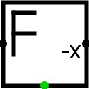

Inverseur à virgule flottante
Inverseur à virgule flottante
| Librairie : | Arithmétique |
| Introduction : | 2.0 Beta 22 |
| Apparence : |  |
Comportement
Le composant inverseur renvoie une valeur à virgule flottante de signe opposé a la valeur à virgule flottante d'entrée. Si les données d'entrée contiennent des signaux non définis (U), d'erreur (E) ou la valeur NaNf, il émettra sur la sortie la valeur NaNf et sur la sortie d'erreur au sud un 1
Pins
- Bord ouest
- Entrée : Valeurs à virgule flottante à inverser. La largeur de donnée en bits correspond à la propriété Dimension flottant.
- Bord est
- Sortie : Valeurs à virgule flottante avec signe inversé. La largeur de donnée en bits correspond à la propriété Dimension flottant
- Bord sud
- Sortie : Erreur, prend la valeur 1 si l'inverseur reçoit un signal d'erreur (E), indéfini (U) ou les valeurs en virgule flottante NaNf. La largeur de donnée est de 1.
Attributs
Lorsque le composant est sélectionné ou en cours d'ajout, les touches Alt-0 à Alt-9 modifient son attribut Dimension flottant.
- Dimension flottant
- La largeur de donnée en bit de l'inverseur 32 ou 64 bits.
Comportement de l'outil pousser
Aucun.
Comportement de l'outil text
Aucun.
Retour à Référence de la bibliothèque